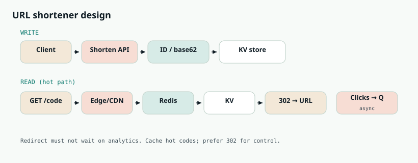
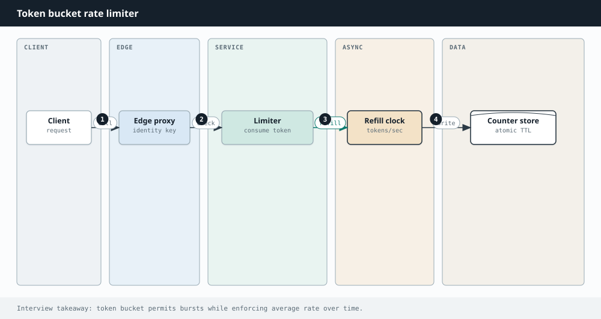
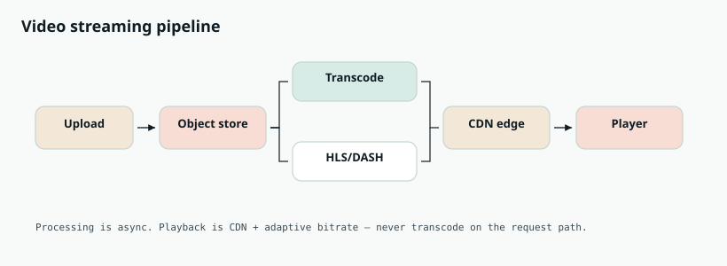
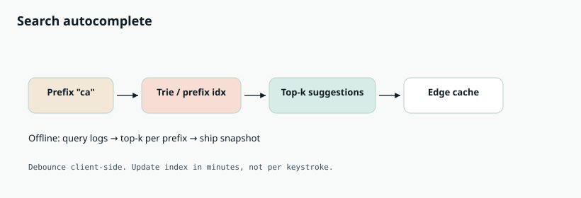
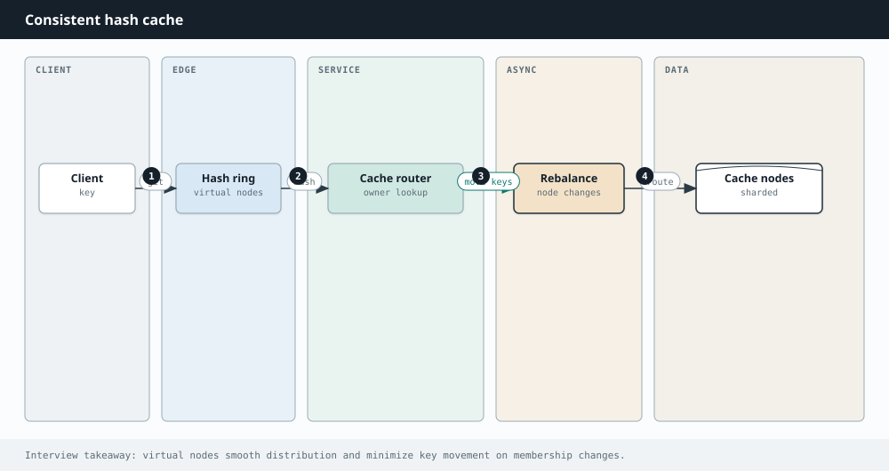
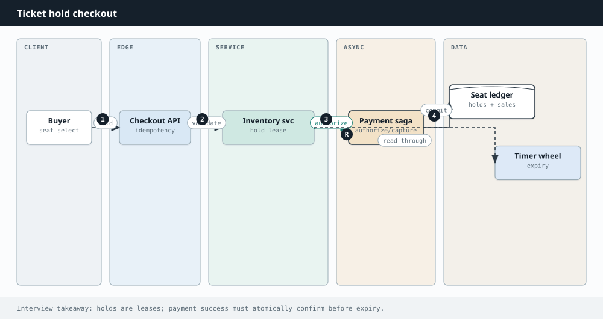

Interview Lab · System Design
System design interview questions
Ten L4–L6 prompts with full whiteboard tracks — clarify, capacity, diagrams, deep dives, and failure modes.
This lab is for L4–L6 system design loops: the prompts that show up again and again — URL shortener as a warmup, then chat, feed, rides, video, or a focused building block like rate limiting.
How to use it: Practice a 45-minute structure every time — clarify → capacity sketch → API → diagram → data model → deep dives → failures. Open a card, study it, then redraw from memory on a blank page.

Related chapters: Approaching SD, Scaling, Caching, URL shortener, WhatsApp, Instagram, Uber.
- Q1 URL shortener
- Q2 Instagram / news feed
- Q3 WhatsApp / chat
- Q4 Rate limiter
- Q5 Uber / ride sharing
- Q6 YouTube / video
- Q7 Notification system
- Q8 Search autocomplete
- Q9 Distributed cache
- Q10 Ticketmaster / booking
Q1. Design a URL Shortener (Bitly)
Design a service like bit.ly: users submit a long URL and get a short link; opening the short link redirects to the original. Expect ~100M new URLs/month and a much higher read:write ratio. Walk a full 45-minute design.
- Custom aliases? Expiry? Auth?
- Analytics (click counts) required?
- Latency: redirect p99 < 100ms?
- Availability target (e.g. 99.9%)?
- Assume ~7-char base62 codes unless they specify otherwise.
- API:
POST /shorten {url, alias?}→ code;GET /{code}→ 302 Location: long URL. - Capacity: 100M/mo ≈ 40 writes/s avg; reads can be thousands/s — cache is mandatory. Storage: 100M × ~500B ≈ 50GB+/yr metadata (order-of-magnitude OK).
- ID generation (pick one & defend): (1) distributed counter + base62; (2) hash URL + collision handling; (3) pre-generated key pool for bursts.
- Data model: code → {long_url, user_id, created, expires, clicks?}. KV/NoSQL or sharded SQL by code hash.
- Read path: edge/CDN optional → LB → app → Redis → DB. Prefer 302 (mapping can change; analytics stay server-side) unless they insist on 301.
- Analytics: async click events to Kafka/queue — never block redirect.
- Abuse: rate-limit shorten; malware URL scan offline.
- Hot keys: viral links — cache replicas / local caches.
- Enumeration: avoid raw sequential public IDs; salt / skip / encrypt.
- Multi-region: replicate read-only mappings; write to primary with async replication.
- Custom aliases: conditional put; reject if taken.
Q2. Design Instagram / News Feed
Design a photo-sharing social network: follow users, upload photos, see a home feed of posts from people you follow (roughly reverse-chronological with light ranking).
- Scale: hundreds of millions of users?
- Celebrity / mega-follower problem in scope?
- Stories? Likes counters? Ranking ML?
- Consistency: eventual feed OK?

- Write media: pre-signed upload → object store + CDN; metadata row (post_id, author, caption, media_url, ts).
- Fan-out on write: push post_id into each follower's timeline cache (Redis lists) — great for normal users.
- Fan-out on read / pull: for celebrities, do not push to tens of millions of timelines; merge recent posts at read time.
- Hybrid: write-fanout for normals, pull for celebs (or inactive users).
- Read path: auth → timeline cache → hydrate posts → CDN URLs.
- Ranking: start chronological; add retrieval + re-rank stage later.
- Sharding: user_id for timelines; post_id for posts.
- Counters (likes/views): sharded in-memory with periodic flush; approximate display OK.
- Notifications / stories: separate services + queues.
- Feed can be eventually consistent; durable post metadata is enough for ACK.
Q3. Design WhatsApp / Chat
Design 1:1 and group messaging with delivery receipts, online presence, and media sharing. Focus on low latency and reliability.
- E2E encryption in scope?
- Max group size?
- Multi-device sync?
- Message history retention?
- Connections: sticky WebSocket/MQTT to chat servers; presence map user→server in Redis.
- Send path: client → chat server → durable queue/log (Kafka) → fan-out to recipient inboxes → push to online sockets or store-and-forward if offline.
- ACK: persist before ACK to sender (at-least-once); clients de-dupe by message_id.
- Ordering: per-conversation monotonic sequence from a single partition/writer.
- Groups: small → fan-out to members; large → group log + members catch up / notify online only.
- Media: upload to blob store; message carries URL/thumbnail.
- Presence: heartbeats with short TTL.
- Receipts: separate lightweight events; do not block delivery.
Q4. Design a Rate Limiter
Design a distributed rate limiter for an API gateway: e.g. 100 requests per user per minute, consistent across many gateway instances.
- Token bucket: refill rate r; burst capacity — industry default.
- Leaky bucket: smooth constant outflow.
- Fixed window: simple counters; edge burst problem.
- Sliding window log/counter: fairer, more cost.

- Gateways call a shared store (Redis) before forwarding.
- Use atomic ops (INCR+EXPIRE or Lua) for token bucket — avoid races.
- On deny: HTTP 429 + Retry-After.
- Dimensions: per API key / IP / endpoint / tenant.
- Multi-region: regional limiters + global budget, or accept approximate limits.
- Redis down: product call — fail open vs fail closed.
# token bucket keys: tokens={key}, ts={key}
# atomic Lua: refill based on elapsed time, consume 1 if tokens>=1
# else return limited
Q5. Design Uber / Ride Sharing
Design ride-hailing: riders request trips, nearby drivers are matched, locations update in realtime, pricing/ETA computed.
- Cities / regions in scope?
- ETA accuracy expectations?
- Surge pricing?
- Driver app battery / update frequency?

- Location stream: drivers send GPS every few seconds → update geo index (geohash / S2 cells in Redis or specialized store).
- Request: rider → query nearby cells → filter status/vehicle → rank by ETA/rating → offer with timeout → expand ring on miss.
- Double dispatch: atomic claim / CAS on driver status with lease; only one rider wins.
- Trip lifecycle: requested → matched → enroute → ongoing → completed (state machine + events to billing/notify).
- ETA: map-match + traffic-aware routing service; cache segments.
- Surge: demand/supply per cell, smoothed (EMA), capped rate of change.
- Scale: shard by city/region — traffic is local.
Q6. Design YouTube / Video Streaming
Design video upload and streaming: users upload; millions watch with adaptive quality worldwide.

- Upload: pre-signed URL → direct to object store; metadata = processing.
- Pipeline: queue workers transcode many resolutions/codecs, thumbs, duration → HLS/DASH segments → mark ready. Fast-start low-res first.
- Playback: client fetches manifest; CDN serves segments; origin is object store; ABR by bandwidth.
- Hot titles: heavy edge caching; short TTL for live.
- Live: separate ingest POPs → packager → CDN; not the VOD path.
- Cost: lifecycle to cold storage; fewer bitrates for rarely watched; copyright fingerprinting async.
- Recs: offline ML + online re-rank — off the play path.
Q7. Design a Notification System
Design multi-channel notifications: push, email, SMS, in-app — with preferences, retries, and high throughput.
- Producers enqueue jobs (do not block product writes).
- Preferences/quiet-hours gate before send.
- Kafka topics by priority/channel → workers render templates → provider adapters (APNs/FCM, SES, Twilio).
- Idempotency keys; rate-limit per user and per provider.
- Retries with exponential backoff → DLQ for poison messages.
- Large audiences: chunked fan-out tasks.
- Aim at-least-once + idempotent display — not exactly-once fantasy.
Q8. Design Typeahead / Search Autocomplete
Design search autocomplete that returns top suggestions as the user types, with low latency and some trending awareness.

- Offline: aggregate query logs → top-k per prefix → build trie/prefix index → ship snapshots to servers/edge.
- Online: client debounces; request prefix → memory trie returns top-k (<50ms); light personalization/trending re-rank.
- Cache popular prefixes at CDN/edge.
- Limit prefix length; store only top-k not full postings.
- Shard trie by first character(s) if needed.
- Refresh index on minutes cadence — not per keystroke.
Q9. Design a Distributed Cache
Design a distributed in-memory cache: get/put/delete, TTL, HA, horizontal scale.

- Client or proxy uses consistent hashing → shard.
- Each shard: primary + replicas (async or semi-sync).
- Eviction: LRU/LFU + TTL per node.
- Membership via gossip/config service; virtual nodes for balance.
- Hot keys: replicate popular keys; local caches.
- Stampede: soft TTL + singleflight / probabilistic early expire.
- Write strategies: invalidate-on-write common; write-through / behind when justified.
- CAP: prefer AP for cache; miss → load DB.
- Persistence optional — usually ephemeral by design.
Q10. Design Ticketmaster / Event Booking
Design ticketing for concerts: browse events, hold seats, pay, issue tickets — without double-selling under spikes.

- Browse: read replicas + CDN for event pages; seat maps cached carefully.
- Inventory states: available → held → sold.
- Hold: soft lock with short TTL (2–10 min) via Redis or conditional row update.
- Checkout: create hold → payment intent → on success commit seats + ticket IDs; on fail/expiry release hold.
- Idempotency: keys on payment webhooks — no double charge / double sell.
- Consistency: strong on inventory (CAS /
UPDATE … WHERE status='available'). - Scale: shard by event_id; waiting rooms / queues for mega on-sales.